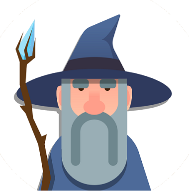
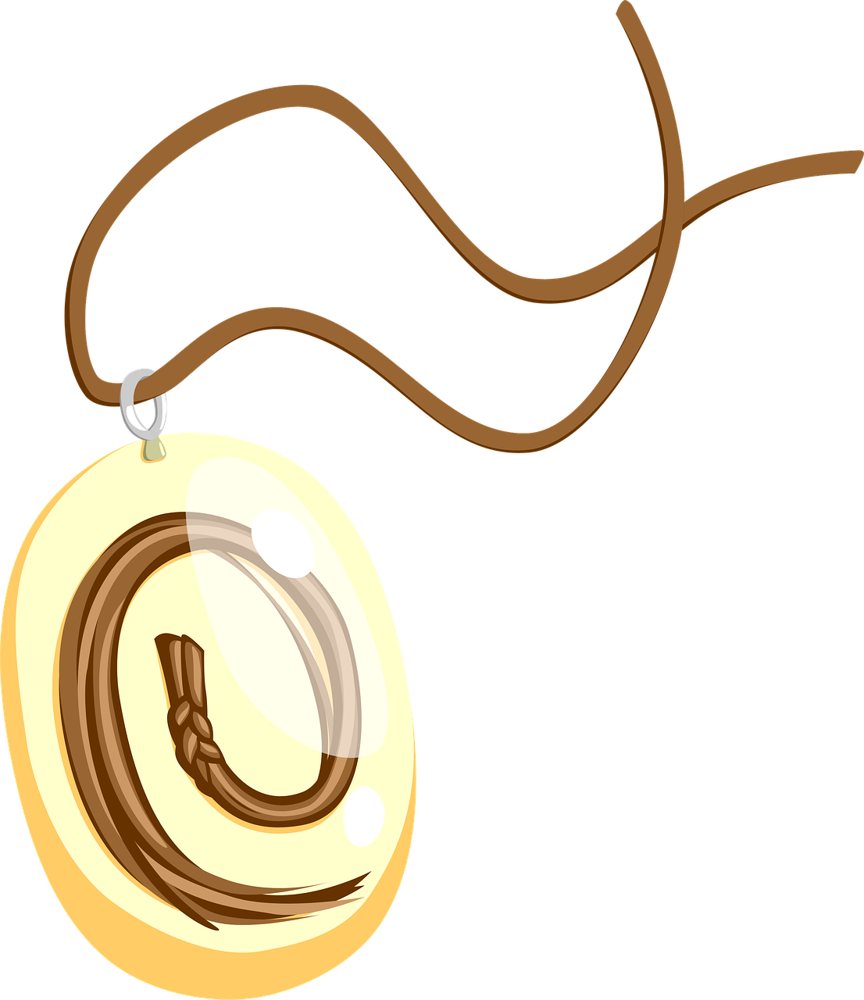
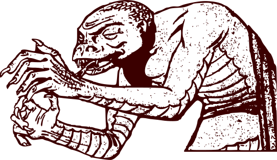

ONNEA, NUORI MESTARI!


Olet voittanut Fronttirontin ja myös oman itsesi. Olet päässyt pimeydestä valoon.
Olkoon tämä amuletti ikuisena merkkinä siitä, että tulet taistelemaan saavutettavan internetin puolesta. Olkoon kehittäjän tiesi suotuisa ja täynnä menestystä. Mene nyt rauhassa.
Tässä lisätietoja opin poluille:- W3-konsortion saavutettavuussivut
- Google ja saavutettavuus
- Mozillan saavutettavuussivut
- EU:n tietopaketti saavutettavuudesta
- Aluehallintoviraston saavutettavuussivut
Sivuston kuvissa on Pixabay-lisenssi vapaaseen kaupalliseen käyttöön ja nimeämistä ei edellytetä. Jos haluat tietää lisää visuaalisen ilmeen takana olevista hahmoista, linkkitägit löytyvät täältä.
Ai niin, haluatko tietää mitä Fronttirontille sitten tapahtui?

Me velhoneuvostossa Tim Berners-Leen johdolla mietimme pitkään, mitä Rontille pitäisi tehdä.
Mutta sitten Mozillan Pena sen siinä keksi ihan viime metreillä ja veti ässän hihasta...
Rontista tehtiin favicon.